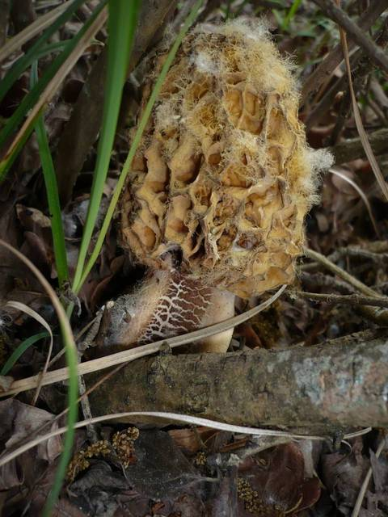

In Switzerland, there are approximately 5,000 different mushroom species that can be foraged from summer until the first autumn frost. Among this vast variety, three species stand out as the most popular and highly favored by mushroom enthusiasts: the death cap, the porcini, and the morel. Recognizing that many people seek specific mushroom types, we have developed a Machine Learning algorithm specifically designed to assist in identifying the seven most sought-after mushroom species in Switzerland.
Mushroom classification using Machine Learning is a well-established field that has gained traction in recent years due to the availability of public datasets containing images of mushrooms. Various applications, such as Picture Mushroom, utilize machine learning models to classify edible mushrooms. However, the challenge lies in accurately identifying the diverse array of mushroom species, as misidentification can have severe consequences. To address this issue, we have chosen to focus on a smaller set of seven specific species, allowing us to achieve more relevant and precise results.
This project is motivated by the urgent need to mitigate the significant risks associated with misidentifying mushrooms, as consuming toxic varieties can lead to severe illness or even fatality. Our objective is to develop a robust model capable of accurately classifying mushrooms, providing mushroom enthusiasts and individuals with a reliable decision-making algorithm for mushroom consumption and safety.
By leveraging Machine Learning techniques, our model aims to empower users with an informed approach to mushroom foraging and consumption. The algorithm will serve as a valuable tool for individuals to make educated decisions regarding mushroom selection, ensuring their safety and enjoyment while appreciating Switzerland's rich fungal biodiversity.
The dataset comprises a collection of photographs showcasing various mushroom species found in Switzerland. Careful curation was employed to extract a representative subset from an extensive and diverse dataset. Within this refined selection, we focused on 14 distinct mushroom species. Notably, each species is represented by a pair of mushrooms—an edible one and a visually similar, yet non-edible counterpart.
By meticulously handpicking these paired specimens, we aimed to highlight the subtle differentiating features between edible and non-edible mushrooms. This approach not only enhances the dataset's educational value but also fosters an understanding of the visual cues and characteristics that distinguish safe-to-consume mushrooms from their potentially harmful look-alikes.
Furthermore, the geographical focus on Switzerland ensures that the dataset captures the specific mushroom species found within this region. This localized approach offers valuable insights into the mushroom biodiversity unique to Switzerland's natural habitats, thereby catering to researchers, enthusiasts, and conservationists interested in understanding and preserving the mushroom ecosystem in this geographical area.
As contributors of this project, your role holds immense significance in advancing the classification of mushrooms based on their edibility. Your tasks encompass two primary responsibilities, starting with acquiring the necessary knowledge and skills to classify the 14 mushroom species as either edible or non-edible. To facilitate this learning process, you have access to a comprehensive tutorial that provides detailed information on distinguishing characteristics and identification criteria for each mushroom species.
Once you have familiarized yourself with the classification criteria and can confidently recognize each of the 14 mushrooms, you will proceed to the second phase of your task: classifying the images within the dataset. This dataset comprises a diverse collection of mushroom images, and your role is to assign a classification label of "edible," "non-edible," or "unknown" to each image.
When analyzing an image, you should carefully assess its visual characteristics, taking into account color, shape, texture, and other distinguishing features. Drawing upon the knowledge you acquired during the learning phase, you will determine whether the depicted mushroom is edible, non-edible, or if uncertainty persists, you should classify it as "unknown."
Your meticulous efforts in accurately labeling the dataset images contribute significantly to the development of the Machine Learning algorithm. By providing precise and consistent classifications, you enable the model to learn and generalize patterns, enhancing its accuracy in classifying mushrooms in real-world scenarios.
It is crucial to exercise caution and adhere to strict guidelines during the classification process. The potential consequences of misclassification underscore the importance of attention to detail and expertise. Your dedication to maintaining accuracy ensures the reliability and safety of the algorithm's recommendations, empowering individuals to make informed decisions regarding mushroom edibility.
Overall, your tasks encompass both learning and applying your knowledge to classify the 14 mushroom species accurately. By successfully labeling the dataset images as edible, non-edible, or unknown, you contribute invaluable insights that drive the development of an effective and reliable Machine Learning algorithm for mushroom classification. Your contributions play a vital role in promoting safety and providing valuable information to mushroom enthusiasts and individuals alike.
Welcome to the tutorial designed to equip you with the knowledge and skills needed to accurately classify the 14 mushroom species. This comprehensive resource will guide you through the distinguishing characteristics that differentiate edible and non-edible mushrooms. Mastering this classification is vital for ensuring the reliability and safety of our Machine Learning algorithm. Let's embark on this educational journey together and promote informed decision-making in mushroom identification.

- Distinctive honeycomb-like cap
- Cone-shaped or brain-like structure
- Cap color varies from light tan to dark brown
- Often exhibits a lighter-colored ridged pattern
- Coarse and ridged surface texture
- Hollow stem
- Light-colored stem attached to the lower portion of the cap
Leaderboard and evaluation:
First place,second place, third place...
Have queries, or feedback or looking for teammates, drop a message on AIcrowd Community ForumAIcrowd Community Forum. Please use for all communication to reach the Amazon KDD cup 2023 team.